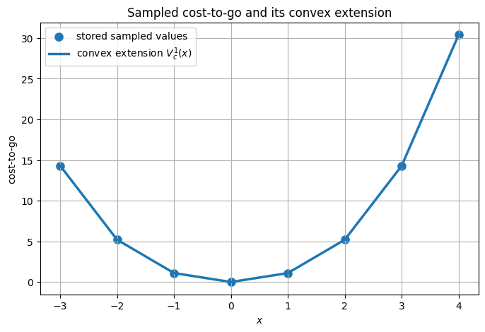
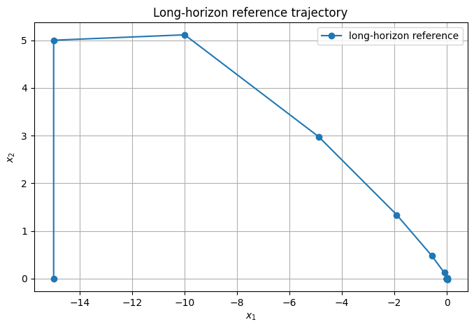
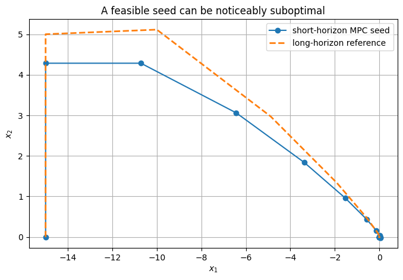
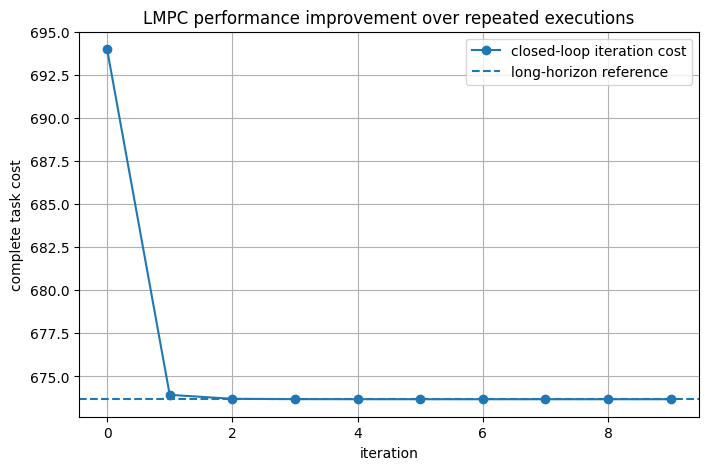
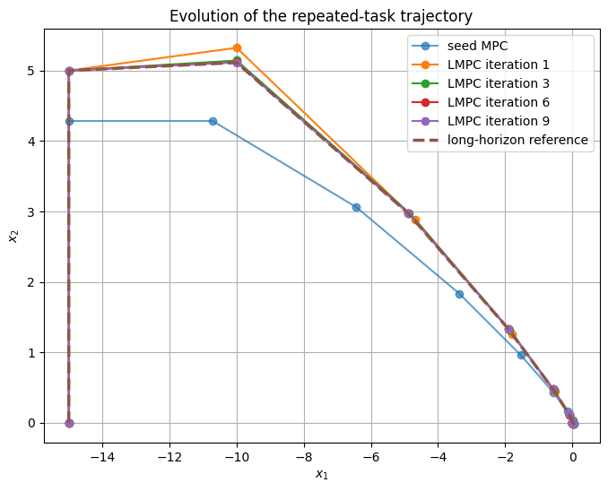
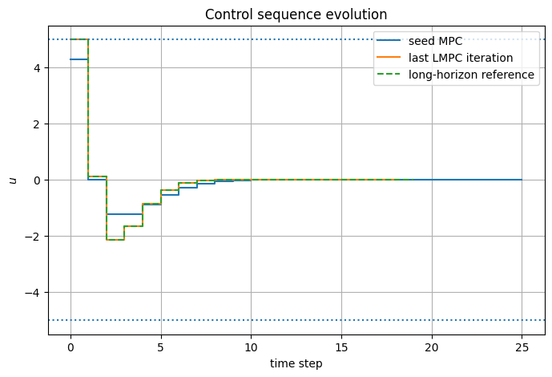
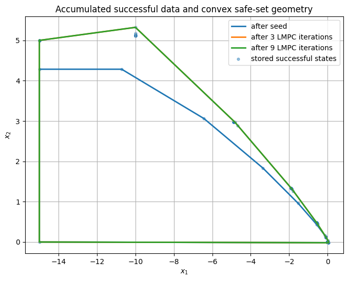
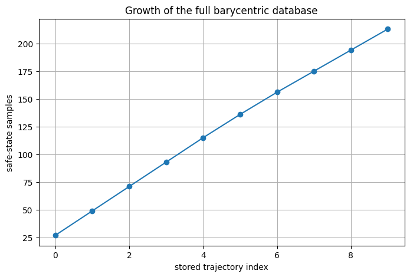

from pathlib import Path
import sys
import time
import numpy as np
import matplotlib.pyplot as plt
from scipy.spatial import ConvexHull
ROOT = Path.cwd().resolve()
if ROOT.name == "notebooks":
ROOT = ROOT.parent
sys.path.insert(0, str(ROOT / "src"))
from advanced_mpc_lmpc.lmpc import (
stage_cost,
trajectory_cost_to_go,
solve_ftocp_l1,
convex_safe_value,
LMPCController,
)
np.set_printoptions(precision=6, suppress=True)
plt.rcParams.update({
"figure.figsize": (8, 5),
"axes.grid": True,
})
Scope
This notebook covers Learning Model Predictive Control (LMPC) for a task that is executed repeatedly from the same initial state. It builds the sampled safe set SS^j from successful trajectories and its convex hull CS^j=\operatorname{conv}(SS^j), proves that both are control invariant, learns a terminal value from stored roll-out costs-to-go through barycentric coordinates, assembles the LMPC terminal constraint and terminal cost, and shows the resulting iterative performance improvement. The ideas are developed first on a scalar integrator and then on a complete double-integrator example, with derivations and numerical checks at each step.
The modelling assumptions are those under which the convex constructions are justified: a deterministic task, known linear dynamics x^+=Ax+Bu, convex state and input constraints, and a convex stage cost. Only the terminal ingredients (stored safe states with their continuation inputs and costs-to-go) are learned from data; the plant model is not.
The LMPC framework is developed in U. Rosolia and F. Borrelli, “Learning Model Predictive Control for Iterative Tasks. A Data-Driven Control Framework,” IEEE Transactions on Automatic Control, 63(7), 2018. For terminal sets, terminal costs and invariance in classical MPC, see F. Borrelli, A. Bemporad and M. Morari, Predictive Control for Linear and Hybrid Systems, Cambridge University Press, 2017.
Learning objectives
After completing this notebook, you should be able to:
- define an iterative/repetitive control task;
- define a successful iteration and a target set \mathcal O;
- construct the sampled safe set SS^j;
- prove its one-step control-invariance property by replaying stored inputs;
- construct the convex safe set CS^j=\operatorname{conv}(SS^j);
- prove why convexification preserves control invariance for linear dynamics and convex constraints;
- compute stored roll-out cost-to-go values;
- distinguish the sampled value function from its convex extension;
- formulate barycentric coordinates and the convex terminal value as a linear program;
- write the complete LMPC finite-horizon problem;
- explain why LMPC terminal ingredients play the same role as terminal ingredients in stabilizing MPC;
- write the double-integrator stage cost used here, including its \ell_1 term;
- understand the epigraph formulation of that \ell_1 penalty;
- generate a feasible seed trajectory with short-horizon MPC;
- run repeated LMPC iterations and interpret the learning curve;
- explain what is actually “learned”;
- understand why different initial safe trajectories need not universally produce the same final solution;
- distinguish LMPC from reinforcement learning and iterative learning control.
Table of Contents
- Part I — Repetitive tasks — I.1 Iteration index versus time index · I.2 Target set and successful iteration · I.3 What does “safe” mean here?
- Part II — Sampled safe sets — II.1 Sampled safe set · II.2 Why the sampled safe set is control invariant · II.3 The important quantifier
- Part III — Convex safe sets — III.1 Why convexify? · III.2 Barycentric coordinates · III.3 Why the convex safe set is control invariant
- Part IV — Learning a terminal value function — IV.1 Roll-out cost-to-go · IV.2 Sampled value function · IV.3 Convex terminal value
- Part V — A one-dimensional example — V.1 Constrained integrator · V.2 How to read this figure
- Part VI — Why the learned value can act like a terminal Lyapunov function — VI.1 Data recursion · VI.2 Learned-value decrease
- Part VII — The LMPC online optimization — VII.1 Finite-horizon problem · VII.2 Geometric meaning · VII.3 Recursive feasibility: shifted-sequence argument
- Part VIII — The double-integrator task — VIII.1 Numerical model · VIII.2 Stage cost · VIII.3 Epigraph formulation of the \ell_1 term · VIII.4 Choice of the short horizon
- Part IX — Long-horizon reference — IX.1 Reference computation
- Part X — Generate the initial feasible trajectory with short-horizon MPC — X.1 A feasible but suboptimal seed · X.2 Compare complete task costs
- Part XI — Initialize the LMPC database — XI.1 Store the seed · XI.2 Inspect one stored continuation
- Part XII — Numerical check of convex-safe-set invariance — XII.1 Construct a convex combination
- Part XIII — First LMPC optimization — XIII.1 Solve from the repeated initial state · XIII.2 Why a sparse barycentric representation exists
- Part XIV — Repeated LMPC iterations — XIV.1 Iteration algorithm · XIV.2 Limited active data for numerical scalability
- Part XV — Learning curves — XV.1 Closed-loop cost versus iteration · XV.2 What is guaranteed and what is observed?
- Part XVI — How the trajectories change — XVI.1 Phase-plane evolution · XVI.2 Control evolution
- Part XVII — Safe-set growth in the state plane — XVII.1 Convex hull of accumulated successful data · XVII.2 Safe-set geometry is only half of the learning
- Part XVIII — Stored cost-to-go values — XVIII.1 Backward recursion
- Part XIX — What exactly is learned? — XIX.1 The plant model is not learned here · XIX.2 LMPC is not DQN · XIX.3 LMPC versus iterative learning control
- Part XX — Do different initializations converge to the same solution? — XX.1 A natural question
- Part XXI — Time-varying safe sets and data growth — XXI.1 Why stored-data management matters
- Part XXII — What the experiment establishes — XXII.1 Supported conclusions · XXII.2 Unsupported conclusions
- Part XXIII — Common pitfalls — XXIII.1 Pitfall: every stored state is optimal · XXIII.2 Pitfall: the convex hull is always safe · XXIII.3 Pitfall: the terminal value is a neural network · XXIII.4 Pitfall: safe-set growth alone explains learning · XXIII.5 Pitfall: the long-horizon reference proves the exact infinite-horizon optimum · XXIII.6 Pitfall: a three-step horizon only sees three steps ahead · XXIII.7 Pitfall: LMPC is reinforcement learning simply because it learns from data
- Part XXIV — Check your understanding
- Part XXV — Exercises
- Part XXVI — References
Part I — Repetitive tasks
I.1 Iteration index versus time index
LMPC has two different indices.
- j denotes the iteration of the repeated task.
- t denotes time within one iteration.
A trajectory from iteration j is written
x^j[0],u^j[0],x^j[1],u^j[1],\ldots,x^j[T_j].
The plant is
x^j[t+1]
=
f\!\left(x^j[t],u^j[t]\right).
For the linear case developed later,
f(x,u)=Ax+Bu.
The task is repeated from the same initial condition
x^j[0]=x_S.
This repeated-task structure is fundamental.
I.2 Target set and successful iteration
Let \mathcal O be the target set.
An iteration is successful if all state/input constraints are respected and
x^j[T_j]\in\mathcal O.
The safe-set construction uses successful executions only.
In both examples of this notebook, the scalar integrator of Part V and the double integrator of Part VIII,
\boxed{
\mathcal O=\{0\}.
}
I.3 What does “safe” mean here?
A stored state is called safe because there exists a known admissible continuation to the target: replay the remainder of a previously successful trajectory.
That is a model/task-specific notion.
It is not a general real-world certificate against unmodeled disturbances, perception errors, or model mismatch.
Part II — Sampled safe sets
II.1 Sampled safe set
After successful iterations i=0,\ldots,j, define the sampled safe set
\boxed{
SS^j
=
\left(
\bigcup_{i=0}^{j}
\bigcup_{t=0}^{T_i}
\{x^i[t]\}
\right)
\cup
\mathcal O.
}
It is a collection of previously visited successful states.
It is finite for finitely many finite trajectories and grows as new successful executions are added.
II.2 Why the sampled safe set is control invariant
Take a stored nonterminal point
x=x^i[t]\in SS^j.
The corresponding stored input u^i[t] is admissible and produces
f(x^i[t],u^i[t])=x^i[t+1]\in SS^j.
Therefore
\boxed{
x\in SS^j
\Longrightarrow
\exists u\in\mathcal U:
f(x,u)\in SS^j.
}
At the target set \mathcal O, one assumes an admissible target controller that keeps the state in \mathcal O.
The stored trajectory itself provides the continuation.
II.3 The important quantifier
The statement is
\forall x\in SS^j,\quad
\exists u\in\mathcal U.
It does not say that one single input works for every state.
Each sampled state may use a different stored continuation input.
Part III — Convex safe sets
III.1 Why convexify?
A terminal constraint
x_N\in SS^j
would force the prediction to end exactly on one stored sample.
For the linear/convex setting, we therefore introduce the convex safe set
\boxed{
CS^j=\operatorname{conv}(SS^j).
}
This fills in the space between stored safe states while retaining a convex optimization structure.
III.2 Barycentric coordinates
Let the stored safe states be s_1,\ldots,s_M.
A point x\in CS^j can be represented as
\boxed{
x=\sum_{r=1}^{M}\lambda_rs_r
}
with
\lambda_r\ge0,
\qquad
\sum_{r=1}^{M}\lambda_r=1.
If we stack the stored safe states as the rows of a matrix S\in\mathbb R^{M\times n}, where n is the state dimension,
S=
\begin{bmatrix}
s_1^\top\\
\vdots\\
s_M^\top
\end{bmatrix},
then
\boxed{
x=S^\top\lambda,
\qquad
\lambda\ge0,
\qquad
\mathbf1^\top\lambda=1.
}
Convention. The stored safe states are the rows of S, both in the formulas and in the code
(convex_safe_value and LMPCController.safe_data() use one stored state per row). This is why
the transpose appears in x=S^\top\lambda, and why the LMPC terminal constraint of Part VII reads
x_N=S^\top\lambda, \lambda\ge0, \mathbf1^\top\lambda=1.
III.3 Why the convex safe set is control invariant
Assume:
- x^+=Ax+Bu;
- \mathcal X and \mathcal U are convex;
- every safe point s_r has a known admissible continuation input u_r^{\mathrm{safe}} and safe successor s_r^+.
For
x=\sum_r\lambda_rs_r,
choose
u=\sum_r\lambda_ru_r^{\mathrm{safe}}.
Then, by linearity,
x^+
=
\sum_r\lambda_r
\left(
As_r+Bu_r^{\mathrm{safe}}
\right)
=
\sum_r\lambda_rs_r^+.
Because the input set is convex, u\in\mathcal U. Because the safe successors remain in the safe set,
x^+\in CS^j.
Hence
\boxed{
CS^j
\text{ is control invariant}
}
under these assumptions.
What breaks outside these assumptions?
For nonlinear dynamics,
f\!\left(
\sum_r\lambda_rs_r,
\sum_r\lambda_ru_r
\right)
is generally not equal to
\sum_r\lambda_rf(s_r,u_r).
Likewise, convex combinations can violate nonconvex constraints.
So convexifying stored trajectories for a nonlinear task requires separate justification.
Part IV — Learning a terminal value function
IV.1 Roll-out cost-to-go
For a successful iteration i,
\boxed{
J_t^i
=
\sum_{k=t}^{T_i-1}
h\!\left(x^i[k],u^i[k]\right).
}
At the target,
J_{T_i}^i=0.
This is the realized remaining cost if the stored continuation is replayed.
IV.2 Sampled value function
If the same state appears multiple times, we keep the best stored cost-to-go:
\boxed{
V^j(x)
=
\min_{\substack{
i,t\\
x^i[t]=x
}}
J_t^i.
}
On the target,
V^j(x)=0,
\qquad
x\in\mathcal O.
The difficulty is that this function is defined only at sampled states.
IV.3 Convex terminal value
We extend the sampled data to the convex safe set using
\boxed{
V_c^j(x)
=
\min_{\lambda}
\sum_{r=1}^{M}\lambda_rV_r
}
subject to
S^\top\lambda=x,
\qquad
\mathbf1^\top\lambda=1,
\qquad
\lambda\ge0.
Here V_r is the cost-to-go stored with the safe state s_r (row r of S).
For fixed stored data, this is a linear program in \lambda.
Geometrically, it constructs the lower convex envelope of the stored state/value samples.
Part V — A one-dimensional example
V.1 Constrained integrator
Consider the scalar integrator
x[t+1]=x[t]+u[t],
with
x\in[-5,5],
\qquad
u\in[-1,1],
target \mathcal O=\{0\}, and
h(x,u)=x^2+0.1u^2.
Two successful iterations are
4\rightarrow3\rightarrow2\rightarrow1\rightarrow0
and
-3\rightarrow-2\rightarrow-1\rightarrow0.
Therefore
SS^1=\{-3,-2,-1,0,1,2,3,4\},
and
\boxed{
CS^1=[-3,4].
}
def scalar_cost_to_go(states, inputs):
states = np.asarray(states, float)
inputs = np.asarray(inputs, float)
J = np.zeros(len(states))
for k in range(len(inputs) - 1, -1, -1):
J[k] = states[k]**2 + 0.1*inputs[k]**2 + J[k+1]
return J
x_pos = np.array([4., 3., 2., 1., 0.])
u_pos = -np.ones(4)
x_neg = np.array([-3., -2., -1., 0.])
u_neg = np.ones(3)
J_pos = scalar_cost_to_go(x_pos, u_pos)
J_neg = scalar_cost_to_go(x_neg, u_neg)
sample_x = np.r_[x_neg[:-1], x_pos]
sample_V = np.r_[J_neg[:-1], J_pos]
order = np.argsort(sample_x)
sample_x = sample_x[order]
sample_V = sample_V[order]
print("sampled state/value pairs:")
for x, v in zip(sample_x, sample_V):
print(f"x={x:4.1f} V={v:6.2f}")
sampled state/value pairs: x=-3.0 V= 14.30 x=-2.0 V= 5.20 x=-1.0 V= 1.10 x= 0.0 V= 0.00 x= 1.0 V= 1.10 x= 2.0 V= 5.20 x= 3.0 V= 14.30 x= 4.0 V= 30.40
grid_1d = np.linspace(-3.0, 4.0, 141)
Vc = []
for xq in grid_1d:
value, lam, success = convex_safe_value(
np.array([xq]),
sample_x[:, None],
sample_V,
)
if not success:
raise RuntimeError("Unexpected LP infeasibility inside the convex safe set.")
Vc.append(value)
Vc = np.asarray(Vc)
plt.figure()
plt.scatter(sample_x, sample_V, s=65, label="stored sampled values")
plt.plot(grid_1d, Vc, linewidth=2.5, label=r"convex extension $V_c^1(x)$")
plt.xlabel(r"$x$")
plt.ylabel("cost-to-go")
plt.title("Sampled cost-to-go and its convex extension")
plt.legend()
plt.show()

V.2 How to read this figure
The dots are values known directly from previous executions.
The continuous curve is not new measured data.
For each intermediate x, it solves the barycentric LP:
What is the cheapest convex combination of stored state/value pairs that represents this state?
In one dimension this produces a convex, piecewise-affine lower envelope.
A stored point above that lower envelope would be dominated and would not necessarily be reproduced exactly by V_c^j.
x_query = np.array([2.5])
value_25, lambda_25, ok_25 = convex_safe_value(
x_query,
sample_x[:, None],
sample_V,
)
active = np.where(lambda_25 > 1e-8)[0]
print("query state:", x_query.item())
print("convex terminal value:", value_25)
print("sum(lambda):", lambda_25.sum())
print("reconstructed state:", (sample_x[:, None].T @ lambda_25).item())
print("\nactive barycentric weights:")
for idx in active:
print(
f" x={sample_x[idx]:4.1f}, "
f"V={sample_V[idx]:6.2f}, "
f"lambda={lambda_25[idx]:.4f}"
)
query state: 2.5 convex terminal value: 9.75 sum(lambda): 1.0 reconstructed state: 2.5 active barycentric weights: x= 2.0, V= 5.20, lambda=0.5000 x= 3.0, V= 14.30, lambda=0.5000
Part VI — Why the learned value can act like a terminal Lyapunov function
VI.1 Data recursion
For a stored safe state s_r,
J_r
=
h(s_r,u_r)
+
J_r^+.
For
x=\sum_r\lambda_rs_r,
use
u=\sum_r\lambda_ru_r.
Then
x^+=\sum_r\lambda_rs_r^+.
VI.2 Learned-value decrease
Convexity of h gives
h(x,u)
\le
\sum_r\lambda_rh(s_r,u_r).
By definition of the convex terminal value,
V_c^j(x^+)
\le
\sum_r\lambda_rJ_r^+.
Therefore
h(x,u)+V_c^j(x^+)
\le
\sum_r\lambda_r
\left[
h(s_r,u_r)+J_r^+
\right].
Using
h(s_r,u_r)+J_r^+=J_r,
we obtain
\boxed{
V_c^j(x^+)-V_c^j(x)
\le
-h(x,u).
}
This has the same structural role as the terminal-cost decrease condition in stabilizing MPC.
Here the terminal value is built from data rather than a Riccati equation.
Part VII — The LMPC online optimization
VII.1 Finite-horizon problem
At the current state, solve
\begin{aligned}
\min_{\{u_k\},\lambda}\quad&
\sum_{k=0}^{N-1}h(x_k,u_k)
+
\sum_{r=1}^{M}\lambda_rV_r
\\
\text{s.t.}\quad&
x_{k+1}=Ax_k+Bu_k,
\\
&
x_k\in\mathcal X,
\quad
u_k\in\mathcal U,
\\
&
x_N=S^\top\lambda,
\\
&
\lambda\ge0,
\quad
\mathbf1^\top\lambda=1.
\end{aligned}
The last two constraints and the learned terminal cost are the data-driven terminal ingredients.
VII.2 Geometric meaning
The equality
x_N=S^\top\lambda
means the optimizer may reconnect to any point in the convex hull of successful experience.
The cost
\lambda^\top V
then tells it how expensive the stored continuation from that terminal representation is.
So LMPC learns both terminal geometry and terminal value.
VII.3 Recursive feasibility: shifted-sequence argument
Suppose
x_N^\star
=
\sum_r\lambda_r^\star s_r.
At the next time, shift the optimized controls and append
\boxed{
u_N^{\mathrm{safe}}
=
\sum_r
\lambda_r^\star
u_r^{\mathrm{safe}}.
}
Then
\begin{aligned}
x_{N+1}
&=
A\sum_r\lambda_r^\star s_r
+
B\sum_r\lambda_r^\star u_r^{\mathrm{safe}}
\\
&=
\sum_r\lambda_r^\star s_r^+.
\end{aligned}
The new terminal state remains in the convex safe set.
This is the LMPC counterpart of the terminal-set shifted-sequence proof.
Part VIII — The double-integrator task
VIII.1 Numerical model
We now apply LMPC to the discrete-time double integrator with state x=[x_1,x_2]^\top (position and velocity) and
A=
\begin{bmatrix}
1&1\\
0&1
\end{bmatrix},
\qquad
B=
\begin{bmatrix}
0\\
1
\end{bmatrix}.
The initial condition is
x_S=
\begin{bmatrix}
-15\\0
\end{bmatrix}.
The box constraints are
|x_i|\le15,
\qquad
|u|\le5.
A = np.array([
[1.0, 1.0],
[0.0, 1.0],
])
B = np.array([
[0.0],
[1.0],
])
x_start = np.array([-15.0, 0.0])
x_lower = np.array([-15.0, -15.0])
x_upper = np.array([ 15.0, 15.0])
u_lower = np.array([-5.0])
u_upper = np.array([ 5.0])
print("A =")
print(A)
print("\nB =")
print(B)
A = [[1. 1.] [0. 1.]] B = [[0.] [1.]]
VIII.2 Stage cost
We use the weights
Q=I,
\qquad
Q_1=0.01I,
\qquad
R=1.
The stage cost is
\boxed{
h(x,u)
=
x^\top Qx
+
u^\top Ru
+
\|Q_1x\|_1.
}
The small \ell_1 term makes h convex but not purely quadratic. The value-decrease argument of Part VI needs only convexity of h, and VIII.3 shows that the online problem remains a QP.
Q = np.eye(2)
Q1 = 0.01 * Q
R = np.array([[1.0]])
print("stage cost at x=[-15,0], u=0:")
print(stage_cost(x_start, np.array([0.0]), Q, R, Q1))
stage cost at x=[-15,0], u=0: 225.15
VIII.3 Epigraph formulation of the \ell_1 term
Let
z_k=Q_1x_k.
Introduce
e_{i,k}\ge0
with
z_{i,k}\le e_{i,k},
\qquad
-z_{i,k}\le e_{i,k}.
Minimizing \sum_i e_{i,k} forces
e_{i,k}=|z_{i,k}|.
Thus the \ell_1 term can be represented using linear inequalities and a linear contribution to the objective.
The overall optimization therefore remains a convex QP.
VIII.4 Choice of the short horizon
The seed controller of Part X uses the deliberately short horizon
\boxed{
N_{\mathrm{MPC}}=3.
}
LMPC uses the same value, N_{\mathrm{LMPC}}=3 (Part XIII). The two controllers share the stage cost and the constraints and differ only in their terminal ingredients: the seed MPC has no terminal cost or terminal constraint, while LMPC adds the learned terminal set and value.
The short horizon is what leaves room for learning. With a substantially longer horizon, plain MPC already comes very close to the long-horizon reference on this task, and there would be little left to improve; Exercise 7 explores the effect of the horizon.
Part IX — Long-horizon reference
IX.1 Reference computation
A common benchmark is a single open-loop problem with a very long finite horizon, for example
N=1000,
used as a numerical proxy for an infinite-time optimum.
Here we keep the computation lightweight and solver-independent: we check horizon convergence and use a shorter horizon once the numerical result has stabilized.
reference_horizons = [10, 15, 20]
reference_solutions = {}
for N_ref in reference_horizons:
sol_ref = solve_ftocp_l1(
A, B, Q, R, Q1,
N=N_ref,
x0=x_start,
x_lower=x_lower,
x_upper=x_upper,
u_lower=u_lower,
u_upper=u_upper,
)
if not sol_ref.success:
raise RuntimeError(sol_ref.message)
reference_solutions[N_ref] = sol_ref
print(
f"N={N_ref:2d}: "
f"cost={sol_ref.objective:.9f}, "
f"terminal norm={np.linalg.norm(sol_ref.X[-1]):.3e}"
)
N=10: cost=673.675953310, terminal norm=3.027e-02 N=15: cost=673.676653450, terminal norm=7.474e-13 N=20: cost=673.676653450, terminal norm=2.420e-09
The numerical value has essentially converged in this example, so we use
N_{\mathrm{ref}}=20
as the long-horizon reference for the rest of the notebook.
This is a numerical reference, not a proof that a finite horizon equals the exact infinite-horizon optimum.
reference = reference_solutions[20]
reference_cost = reference.objective
plt.figure()
plt.plot(reference.X[:, 0], reference.X[:, 1], "-o", label="long-horizon reference")
plt.xlabel(r"$x_1$")
plt.ylabel(r"$x_2$")
plt.title("Long-horizon reference trajectory")
plt.legend()
plt.show()
print("reference cost:", reference_cost)

reference cost: 673.6766534499407
Part X — Generate the initial feasible trajectory with short-horizon MPC
X.1 A feasible but suboptimal seed
LMPC needs at least one successful trajectory.
We generate it with ordinary receding-horizon MPC, without terminal cost or terminal constraint (VIII.4), and
N_{\mathrm{MPC}}=3.
The trajectory is feasible but suboptimal. It initializes the safe set and the stored cost-to-go.
def close_double_integrator_exactly(X_list, U_list, tol=1e-5):
# Numerical completion used only to make the stored trajectory end
# exactly at O={0}.
#
# For A=[[1,1],[0,1]], B=[[0],[1]], from x=[p,v]:
#
# u0 = -p - 2 v
# u1 = p + v
#
# gives x_{k+2}=0.
x = np.asarray(X_list[-1], float).copy()
if np.linalg.norm(x) > tol:
raise ValueError("terminal bridge requested too far from the target")
p, v = x
bridge = [
np.array([-p - 2.0*v]),
np.array([ p + v]),
]
for u in bridge:
if np.any(u < u_lower - 1e-9) or np.any(u > u_upper + 1e-9):
raise ValueError("terminal bridge violates the input bounds")
x = A @ x + B @ u
if np.any(x < x_lower - 1e-9) or np.any(x > x_upper + 1e-9):
raise ValueError("terminal bridge violates the state bounds")
U_list.append(u.copy())
X_list.append(x.copy())
X_list[-1] = np.zeros(2)
return X_list, U_list
def run_short_horizon_mpc_seed(
x0,
*,
N=3,
stop_tol=1e-6,
max_steps=100,
):
x = np.asarray(x0, float).copy()
X = [x.copy()]
U = []
for _ in range(max_steps):
if np.linalg.norm(x) <= stop_tol:
break
sol = solve_ftocp_l1(
A, B, Q, R, Q1,
N=N,
x0=x,
x_lower=x_lower,
x_upper=x_upper,
u_lower=u_lower,
u_upper=u_upper,
)
if not sol.success:
raise RuntimeError(sol.message)
u = sol.U[0].copy()
x = A @ x + B @ u
U.append(u)
X.append(x.copy())
else:
raise RuntimeError("short-horizon MPC did not approach the target")
X, U = close_double_integrator_exactly(X, U, tol=1e-5)
return np.asarray(X), np.asarray(U)
X_seed, U_seed = run_short_horizon_mpc_seed(x_start)
J_seed = trajectory_cost_to_go(
X_seed,
U_seed,
Q,
R,
Q1,
)
print("seed trajectory length:", len(U_seed), "steps")
print("seed terminal state:", X_seed[-1])
print("seed closed-loop cost:", J_seed[0])
print("long-horizon reference cost:", reference_cost)
print("seed performance gap:", J_seed[0] - reference_cost)
seed trajectory length: 26 steps seed terminal state: [0. 0.] seed closed-loop cost: 693.9923723414192 long-horizon reference cost: 673.6766534499407 seed performance gap: 20.315718891478582
plt.figure()
plt.plot(X_seed[:, 0], X_seed[:, 1], "-o", label="short-horizon MPC seed")
plt.plot(reference.X[:, 0], reference.X[:, 1], "--", linewidth=2,
label="long-horizon reference")
plt.xlabel(r"$x_1$")
plt.ylabel(r"$x_2$")
plt.title("A feasible seed can be noticeably suboptimal")
plt.legend()
plt.show()

X.2 Compare complete task costs
The open-loop objective of one N=3 solve contains only three future stages.
The seed closed-loop task cost accumulates the complete repeated MPC execution until the target is reached.
Those are different quantities.
Learning curves should compare complete iteration costs.
Part XI — Initialize the LMPC database
XI.1 Store the seed
The controller stores:
- successful states;
- applied inputs;
- backward cost-to-go values.
The target x=0 is represented explicitly with zero terminal cost.
N_LMPC = 3
lmpc = LMPCController(
A, B, Q, R,
N=N_LMPC,
Q1=Q1,
x_lower=x_lower,
x_upper=x_upper,
u_lower=u_lower,
u_upper=u_upper,
target=np.zeros(2),
)
lmpc.add_trajectory(X_seed, U_seed)
S_seed, V_seed, Usafe_seed, next_seed = lmpc.safe_data()
print("stored successful trajectories:", len(lmpc.trajectories))
print("safe-state samples:", len(S_seed))
print("stored seed cost:", lmpc.iteration_costs[0])
stored successful trajectories: 1 safe-state samples: 27 stored seed cost: 693.9923723414192
XI.2 Inspect one stored continuation
Every nonterminal safe point has a continuation input, successor safe point, and cost-to-go.
That makes the invariance statement constructive.
r = 5
print("safe state =", S_seed[r])
print("stored safe input =", Usafe_seed[r])
r_next = next_seed[r]
print("stored successor =", S_seed[r_next])
print(
"dynamics residual =",
A @ S_seed[r] + B @ Usafe_seed[r] - S_seed[r_next]
)
print("cost-to-go =", V_seed[r])
safe state = [-3.369286 1.836434] stored safe input = [-0.874495] stored successor = [-1.532852 0.96194 ] dynamics residual = [0. 0.] cost-to-go = 19.799092676358153
Part XII — Numerical check of convex-safe-set invariance
XII.1 Construct a convex combination
Choose several stored safe points and convex weights.
Then compare the successor computed from the convex-combination state/input with the convex combination of stored successors.
chosen = np.array([2, 5, 8, 12])
lam_demo = np.array([0.10, 0.25, 0.30, 0.35])
x_demo = lam_demo @ S_seed[chosen]
u_demo = lam_demo @ Usafe_seed[chosen]
successor_indices = next_seed[chosen]
x_plus_from_data = lam_demo @ S_seed[successor_indices]
x_plus_from_dynamics = A @ x_demo + B @ u_demo
print("lambda sum:", lam_demo.sum())
print("convex-combination state:", x_demo)
print("convex-combination input:", u_demo)
print("successor from dynamics:", x_plus_from_dynamics)
print("successor from stored successors:", x_plus_from_data)
print("difference:", x_plus_from_dynamics - x_plus_from_data)
lambda sum: 0.9999999999999999 convex-combination state: [-2.36938 0.93034] convex-combination input: [-0.254442] successor from dynamics: [-1.43904 0.675898] successor from stored successors: [-1.43904 0.675898] difference: [0. 0.]
The difference is numerical round-off.
This is the concrete identity behind the linear-system convex-safe-set proof.
Part XIII — First LMPC optimization
XIII.1 Solve from the repeated initial state
The explicit prediction horizon remains only
N_{\mathrm{LMPC}}=3.
The learned terminal set and value now communicate information beyond those three steps.
first_lmpc_solution = lmpc.solve(
x_start,
last_n_trajectories=None,
)
if not first_lmpc_solution.success:
raise RuntimeError(first_lmpc_solution.message)
print("solve success:", first_lmpc_solution.success)
print("first input:", first_lmpc_solution.U[0])
print("predicted terminal state:", first_lmpc_solution.X[-1])
print("terminal barycentric reconstruction:", first_lmpc_solution.terminal_state)
print("sum(lambda):", first_lmpc_solution.lambdas.sum())
print("minimum lambda:", first_lmpc_solution.lambdas.min())
solve success: True first input: [5.] predicted terminal state: [-4.993926 2.486288] terminal barycentric reconstruction: [-4.993926 2.486288] sum(lambda): 1.0000000004227534 minimum lambda: 0.0
active_lambda = np.where(first_lmpc_solution.lambdas > 1e-6)[0]
print("active terminal safe points:", len(active_lambda))
for idx in active_lambda:
print(
f"index={idx:3d} "
f"lambda={first_lmpc_solution.lambdas[idx]:.6f} "
f"state={first_lmpc_solution.safe_states[idx]} "
f"value={first_lmpc_solution.safe_values[idx]:.6f}"
)
active terminal safe points: 2 index= 4 lambda=0.530804 state=[-6.430002 3.060716] value=72.105772 index= 5 lambda=0.469196 state=[-3.369286 1.836434] value=19.799093
XIII.2 Why a sparse barycentric representation exists
The terminal state is two-dimensional.
Carathéodory's theorem says that any point in a convex hull in \mathbb R^2 can be represented using at most three points.
Numerical degeneracy can produce additional tiny coefficients, but a sparse representation exists.
Part XIV — Repeated LMPC iterations
XIV.1 Iteration algorithm
Each iteration:
- resets to the same initial state;
- solves the short LMPC problem repeatedly;
- reaches the target;
- appends the new successful trajectory;
- updates the cost-to-go database.
XIV.2 Limited active data for numerical scalability
The number of stored samples grows with every successful iteration, and each sample used online adds a barycentric variable to the QP (Part XXI). Using every stored trajectory in every online QP gives the optimizer the most terminal candidates, but the problem keeps growing.
We keep the full history for analysis but use only the most recent four successful trajectories in the online QP once enough data exist.
The previous iteration is therefore always retained (the cost-improvement argument of XV.2 relies on it), while the barycentric optimization remains compact and numerically well conditioned. Exercise 9 compares this choice with using all stored data.
def run_one_lmpc_iteration(
controller,
x0,
*,
active_trajectory_window=4,
stop_tol=1e-6,
max_steps=100,
):
x = np.asarray(x0, float).copy()
X = [x.copy()]
U = []
warm = None
solve_times = []
for _ in range(max_steps):
if np.linalg.norm(x) <= stop_tol:
break
tic = time.perf_counter()
sol = controller.solve(
x,
last_n_trajectories=active_trajectory_window,
warm=warm,
)
solve_times.append(time.perf_counter() - tic)
if not sol.success:
raise RuntimeError(
f"LMPC QP failed: {sol.message}; "
f"max violation={sol.max_violation:.3e}"
)
u = sol.U[0].copy()
x_next = A @ x + B @ u
U.append(u)
X.append(x_next.copy())
warm = controller.shifted_warm_start(x_next, sol)
x = x_next
else:
raise RuntimeError("LMPC iteration did not approach the target")
X, U = close_double_integrator_exactly(X, U, tol=1e-5)
X = np.asarray(X)
U = np.asarray(U)
J = trajectory_cost_to_go(X, U, Q, R, Q1)
controller.add_trajectory(X, U)
return {
"X": X,
"U": U,
"cost": float(J[0]),
"mean_solve_time": float(np.mean(solve_times)),
"max_solve_time": float(np.max(solve_times)),
}
iterations = []
n_learning_iterations = 9
for j in range(n_learning_iterations):
record = run_one_lmpc_iteration(
lmpc,
x_start,
active_trajectory_window=4,
)
iterations.append(record)
print(
f"iteration {j+1:2d}: "
f"steps={len(record['U']):2d}, "
f"cost={record['cost']:.9f}, "
f"mean solve={1e3*record['mean_solve_time']:.1f} ms"
)
iteration 1: steps=22, cost=673.931584182, mean solve=5.7 ms iteration 2: steps=22, cost=673.699646784, mean solve=5.2 ms iteration 3: steps=22, cost=673.682513569, mean solve=10.1 ms iteration 4: steps=22, cost=673.678696282, mean solve=25.6 ms iteration 5: steps=21, cost=673.677471791, mean solve=21.9 ms iteration 6: steps=20, cost=673.677011397, mean solve=18.8 ms iteration 7: steps=19, cost=673.676818458, mean solve=17.6 ms iteration 8: steps=19, cost=673.676732389, mean solve=13.4 ms iteration 9: steps=19, cost=673.676705720, mean solve=12.1 ms
Part XV — Learning curves
XV.1 Closed-loop cost versus iteration
The seed is iteration 0.
Each following point is the complete cost of one new LMPC execution.
all_iteration_costs = np.array(
[J_seed[0]]
+ [record["cost"] for record in iterations]
)
plt.figure()
plt.plot(
np.arange(len(all_iteration_costs)),
all_iteration_costs,
"-o",
label="closed-loop iteration cost",
)
plt.axhline(
reference_cost,
linestyle="--",
label="long-horizon reference",
)
plt.xlabel("iteration")
plt.ylabel("complete task cost")
plt.title("LMPC performance improvement over repeated executions")
plt.legend()
plt.show()
print("seed cost:", all_iteration_costs[0])
print("last LMPC cost:", all_iteration_costs[-1])
print("long-horizon reference:", reference_cost)
print("final gap:", all_iteration_costs[-1] - reference_cost)

seed cost: 693.9923723414192 last LMPC cost: 673.676705720395 long-horizon reference: 673.6766534499407 final gap: 5.2270454375502595e-05
XV.2 What is guaranteed and what is observed?
Under the standard deterministic repetitive-task LMPC assumptions, the previous successful trajectory remains a feasible candidate for the next iteration, which supports a non-increasing iteration-cost result.
In this example that behavior is visible numerically:
J^{j+1}(x_S)\le J^j(x_S).
This is different from claiming that every LMPC formulation must converge to the unique global infinite-horizon optimum.
cost_differences = np.diff(all_iteration_costs)
print("iteration-to-iteration cost changes:")
print(cost_differences)
print("largest increase:", np.max(cost_differences))
iteration-to-iteration cost changes: [-20.060788 -0.231937 -0.017133 -0.003817 -0.001224 -0.00046 -0.000193 -0.000086 -0.000027] largest increase: -2.6669017415770213e-05
plt.figure(figsize=(8, 6))
plt.plot(
X_seed[:, 0],
X_seed[:, 1],
"-o",
alpha=0.7,
label="seed MPC",
)
for idx in [0, 2, 5, 8]:
record = iterations[idx]
plt.plot(
record["X"][:, 0],
record["X"][:, 1],
"-o",
label=f"LMPC iteration {idx+1}",
)
plt.plot(
reference.X[:, 0],
reference.X[:, 1],
"--",
linewidth=2.5,
label="long-horizon reference",
)
plt.xlabel(r"$x_1$")
plt.ylabel(r"$x_2$")
plt.title("Evolution of the repeated-task trajectory")
plt.legend()
plt.show()

XVI.2 Control evolution
plt.figure()
plt.step(
np.arange(len(U_seed)),
U_seed[:, 0],
where="post",
label="seed MPC",
)
plt.step(
np.arange(len(iterations[-1]["U"])),
iterations[-1]["U"][:, 0],
where="post",
label="last LMPC iteration",
)
plt.step(
np.arange(len(reference.U)),
reference.U[:, 0],
where="post",
linestyle="--",
label="long-horizon reference",
)
plt.axhline(5.0, linestyle=":")
plt.axhline(-5.0, linestyle=":")
plt.xlabel("time step")
plt.ylabel(r"$u$")
plt.title("Control sequence evolution")
plt.legend()
plt.show()

def safe_hull_points(trajectory_list):
points = [np.zeros(2)]
for X in trajectory_list:
points.extend(X[:-1])
points = np.asarray(points, float)
points = np.unique(np.round(points, 10), axis=0)
return points
def draw_hull(ax, points, label, linewidth=2):
if len(points) < 3:
return
hull = ConvexHull(points)
cycle = np.r_[hull.vertices, hull.vertices[0]]
ax.plot(
points[cycle, 0],
points[cycle, 1],
linewidth=linewidth,
label=label,
)
seed_points = safe_hull_points([X_seed])
mid_points = safe_hull_points(
[X_seed]
+ [iterations[k]["X"] for k in range(3)]
)
final_points = safe_hull_points(
[X_seed]
+ [record["X"] for record in iterations]
)
plt.figure(figsize=(8, 6))
ax = plt.gca()
draw_hull(ax, seed_points, "after seed")
draw_hull(ax, mid_points, "after 3 LMPC iterations")
draw_hull(ax, final_points, "after 9 LMPC iterations")
ax.scatter(
final_points[:, 0],
final_points[:, 1],
s=12,
alpha=0.45,
label="stored successful states",
)
ax.set_xlabel(r"$x_1$")
ax.set_ylabel(r"$x_2$")
ax.set_title("Accumulated successful data and convex safe-set geometry")
ax.legend()
plt.show()

XVII.2 Safe-set geometry is only half of the learning
New trajectories can enlarge or reshape the safe-state hull.
But LMPC also learns better cost-to-go values.
Even when the hull changes very little near convergence, improved terminal values can still alter the short-horizon decision.
Part XVIII — Stored cost-to-go values
XVIII.1 Backward recursion
The cost-to-go of each successful trajectory is computed backward:
J_T=0,
\boxed{
J_t=h(x_t,u_t)+J_{t+1}.
}
In the code, trajectory_cost_to_go implements this recursion, and lmpc.safe_data() returns
the resulting values, aligned with the rows of S, as the vector V in the terminal cost
\lambda^\top V.
This resembles dynamic programming, but the values come from realized stored trajectories rather than solving the Bellman optimality equation over the full state space.
J_last = trajectory_cost_to_go(
iterations[-1]["X"],
iterations[-1]["U"],
Q,
R,
Q1,
)
residuals = []
for k in range(len(iterations[-1]["U"])):
residuals.append(
J_last[k]
- stage_cost(
iterations[-1]["X"][k],
iterations[-1]["U"][k],
Q,
R,
Q1,
)
- J_last[k+1]
)
print(
"maximum backward recursion residual:",
np.max(np.abs(residuals))
)
maximum backward recursion residual: 2.842170943040401e-14
Part XIX — What exactly is learned?
XIX.1 The plant model is not learned here
The matrices A and B remain known and are used explicitly in every online optimization.
The learned information is:
- safe terminal geometry;
- successful continuation inputs;
- terminal cost-to-go information.
This is data-driven but not model-free.
XIX.2 LMPC is not DQN
A DQN learns an action-value approximation, commonly with a neural network and temporal-difference updates.
This LMPC instead:
- keeps an explicit dynamics model;
- keeps explicit constraints;
- solves an optimization online;
- uses data to build terminal ingredients.
The methods are conceptually related through value information, but they are not the same algorithmic framework.
XIX.3 LMPC versus iterative learning control
Both exploit repetition.
Classical ILC often updates a trial-indexed feedforward/input signal from one execution to the next.
LMPC instead inserts learned trajectory information into a constrained receding-horizon optimal control problem.
Its distinctive object is the learned terminal set/value pair.
Part XX — Do different initializations converge to the same solution?
XX.1 A natural question
LMPC only needs an initial feasible successful trajectory.
That trajectory may come from MPC, LQR, a human demonstration, or another controller.
Does every feasible initialization necessarily converge to the same final trajectory?
In general,
\boxed{
\text{no universal global-optimum guarantee follows merely from feasibility.}
}
The answer depends on task structure, convexity, stored data, controller formulation, and the assumptions of the particular LMPC result.
This simple convex example may empirically produce very similar limiting behavior from different reasonable seeds, but that observation is not a general theorem.
Part XXI — Time-varying safe sets and data growth
XXI.1 Why stored-data management matters
If every state from every successful iteration is retained, the number of barycentric variables grows with the total number of samples.
One remedy is to use time-varying subsets of the stored data, for example
TS_t^{l,j}
=
\left(
\bigcup_{i=l}^{j}
\bigcup_{s=t}^{T_i}
\{x^i[s]\}
\right)
\cup
\mathcal O.
This subset keeps only iterations l,\ldots,j and, from each of them, only the states visited at time t or later. The controller in this notebook uses only the iteration window, with the most recent four trajectories (XIV.2), and keeps all time indices.
Any such subset creates a practical trade-off between richer data and smaller online optimization problems.
full_safe_sizes = []
for j in range(len(lmpc.trajectories)):
size = 1
for X in lmpc.trajectories[:j+1]:
size += len(X) - 1
full_safe_sizes.append(size)
plt.figure()
plt.plot(np.arange(len(full_safe_sizes)), full_safe_sizes, "-o")
plt.xlabel("stored trajectory index")
plt.ylabel("safe-state samples")
plt.title("Growth of the full barycentric database")
plt.show()
print("full database size after all iterations:", full_safe_sizes[-1])
print("online active window: most recent 4 trajectories + target")

full database size after all iterations: 213 online active window: most recent 4 trajectories + target
Part XXII — What the experiment establishes
XXII.1 Supported conclusions
The numerical example shows that:
- the short-horizon seed is feasible but more expensive;
- successful data provide terminal safe geometry and cost-to-go information;
- the LMPC terminal state satisfies a barycentric safe-set constraint;
- repeated executions reduce the complete task cost;
- the learned trajectories approach the long-horizon reference;
- the modeled constraints remain satisfied.
XXII.2 Unsupported conclusions
This notebook alone does not establish:
- robustness to disturbances;
- robustness to model mismatch;
- safety of arbitrary nonlinear convexification;
- global-optimality convergence for every LMPC problem;
- model-free learning;
- transfer to unrelated initial conditions without additional analysis.
Part XXIII — Common pitfalls
XXIII.1 Pitfall: every stored state is optimal
No. Stored states are safe because they belong to successful trajectories. A successful trajectory may be very suboptimal.
XXIII.2 Pitfall: the convex hull is always safe
No. The invariance proof of III.3 relies on linear dynamics and convex constraints.
XXIII.3 Pitfall: the terminal value is a neural network
Not here. It is built from stored roll-out costs and barycentric interpolation.
XXIII.4 Pitfall: safe-set growth alone explains learning
No. The learned value/cost-to-go is equally important.
XXIII.5 Pitfall: the long-horizon reference proves the exact infinite-horizon optimum
No. It is a numerical finite-horizon proxy whose convergence is checked.
XXIII.6 Pitfall: a three-step horizon only sees three steps ahead
Only the explicit prediction is three steps long. The seed MPC and LMPC both use N_{\mathrm{MPC}}=N_{\mathrm{LMPC}}=3, but LMPC adds the terminal constraint x_N=S^\top\lambda, which links the prediction to stored continuations that reach the target, and the terminal cost \lambda^\top V, which prices the remainder of the task. That is why LMPC improves on the seed with the same horizon (VIII.4).
XXIII.7 Pitfall: LMPC is reinforcement learning simply because it learns from data
In this notebook, LMPC is model-based predictive control with terminal ingredients learned from successful closed-loop data (Part XIX).
Part XXIV — Check your understanding
Try to answer each question before opening its answer.
1. What is the sampled safe set?
Answer
The union of states visited by successful previous iterations, together with the target set.
2. Why is a sampled state safe?
Answer
Because replaying its stored continuation input takes the system to the next state of a successful trajectory and, step by step, to the target.
3. What is the convex safe set?
Answer
The convex hull of the sampled safe set:
CS^j=\operatorname{conv}(SS^j).
4. Why is it control invariant in this example?
Answer
Linearity maps convex combinations of safe state/input pairs to convex combinations of safe successors, and the state/input constraints are convex.
5. What is stored besides the state?
Answer
A continuation input/successor and a realized cost-to-go.
6. What does x_N=S^\top\lambda mean?
Answer
Together with \lambda\ge0 and \mathbf1^\top\lambda=1, it places the terminal prediction inside the convex hull of the successful stored states, which are the rows of S.
7. What does \lambda^\top V mean?
Answer
The learned terminal value obtained by barycentric interpolation of stored costs-to-go.
8. What is actually learned?
Answer
Terminal safe geometry, continuation information, and terminal cost-to-go; not the system matrices, which are known in this example.
9. Why is one feasible trajectory enough to start?
Answer
It provides at least one complete admissible continuation from the repeated initial condition to the target, together with safe states and costs-to-go.
10. Why can a horizon-three LMPC outperform the horizon-three seed MPC?
Answer
The learned terminal set and value communicate information about safe and costly behavior beyond the explicit three-step prediction window.
11. Why is the \ell_1 term represented with epigraph variables?
Answer
Absolute values can be represented by linear inequalities -e_i\le z_i\le e_i, e_i\ge0, while minimizing \sum e_i, so the online problem stays a QP.
12. Does monotonic iteration cost imply global optimality?
Answer
No. Performance improvement and convergence to a global optimum are different statements.
13. Why does the QP grow with experience?
Answer
Each active safe-state sample contributes a barycentric variable.
14. Why use a limited trajectory window?
Answer
It bounds the size of the online QP while retaining recent successful continuations, including the previous iteration, which the cost-improvement argument of XV.2 needs.
Part XXV — Exercises
Exercise 1 — sampled safe-set invariance
Prove
x\in SS^j
\Longrightarrow
\exists u\in\mathcal U:
f(x,u)\in SS^j.
State the required target-set assumption.
Exercise 2 — convex invariance
For x^+=Ax+Bu, prove control invariance of CS^j under convex constraints.
Identify where linearity and convexity enter.
Exercise 3 — barycentric LP
Compute V_c^1(2.5) by hand in the one-dimensional example.
Exercise 4 — dominated data
Add a worse trajectory through an already sampled state and explain how the sampled minimum and convex envelope treat it.
Exercise 5 — stage cost by hand
For
x=[-2,1]^\top,
\qquad
u=0.5,
compute the stage cost h(x,u) of VIII.2 by hand.
Exercise 6 — epigraph
Prove the epigraph representation of \|z\|_1.
Exercise 7 — horizon
Repeat the seed MPC experiment with N=2,3,5 and compare complete closed-loop task costs.
Exercise 8 — different feasible seed
Generate another successful seed and compare the LMPC learning curve.
Does the experiment prove initialization independence?
Exercise 9 — database size
Compare all-data versus recent-trajectory safe sets and record solve time and iteration cost.
Exercise 10 — model mismatch
If the real system is
x^+=(A+\Delta A)x+Bu,
which line in the convex-invariance proof fails?
Exercise 11 — nonlinear counterexample
Give a nonlinear f(x,u) for which convex combinations do not propagate linearly.
Exercise 12 — classical MPC versus LMPC terminal ingredients
Compare the classical pair
(\mathcal X_f,p)
with the learned pair
(CS^j,V_c^j).
Which roles are analogous, and where does the information come from?
Part XXVI — References
- U. Rosolia and F. Borrelli, “Learning Model Predictive Control for Iterative Tasks. A Data-Driven Control Framework,” IEEE Transactions on Automatic Control, 63(7), 1883–1896, 2018, DOI 10.1109/TAC.2017.2753460.
- F. Borrelli, A. Bemporad, and M. Morari, Predictive Control for Linear and Hybrid Systems, Cambridge University Press, 2017.
- J. B. Rawlings, D. Q. Mayne, and M. M. Diehl, Model Predictive Control: Theory, Computation, and Design, 2nd ed., 2022.
Implementation note: the long-horizon reference of Part IX uses N=20 after a horizon-convergence check instead of a very long horizon such as N=1000, so that the notebook remains lightweight and solver-independent.